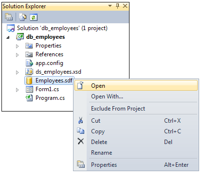
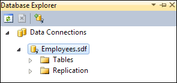
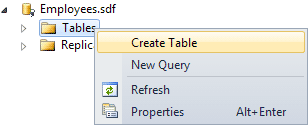
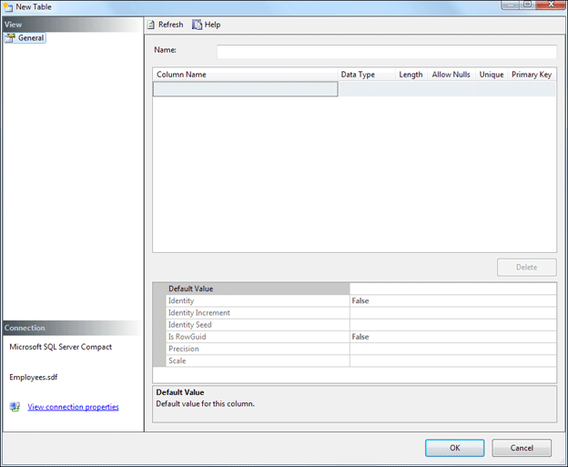
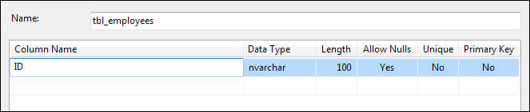
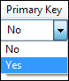
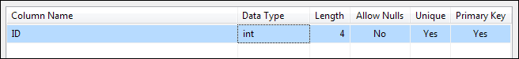
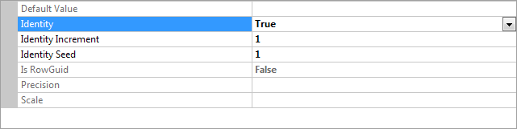
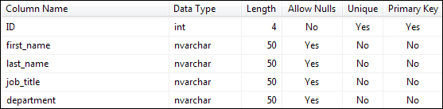
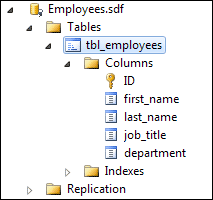

Creating SQL Server Express database tables
Now that you have created the database itself, you need to create at least one table to go in it.
To create a table, right click on the database in the Solution Explorer. From the menu that appears, select Open:

When you click Open, you'll see the Database Explorer appear on the left hand side of your screen:

To create a new table, right click on Tables. From the menu that appears, select Create Table (Add New Table in versions 2008):

When you click Create Table, you'll see a dialogue box appear. This one:

This screen is where you set up the Columns that go in the table. You'll get to enter the actual data later. But you need to tell SQL Server what kind of data (Data Type) is going into each column.
First, though, type a name for your table in the Name box at the top. Call the table tbl_employees.
For the first column in the table, type ID in the in the Column Name box. You'll then see some more information appear:

We'll set the ID column as a Primary Key. Click into the Primary Key box and select Yes from the dropdown list:

For the other values, set the Data Type to int, the Length to 4, Allow Nulls to No, and Unique to Yes. Your first column should then look like this:

The Primary Key field, the ID column, will need to have a new integer assigned every time a new entry is added to the table. In other databases, this is known as an auto increment number. So that this happens automatically without us having to worry about it, have a look at the bottom of your Table screen. You should see a Properties area. Click on Identity and set it to True:

The Increment value is set to 1, meaning the database itself will automatically add 1 when a new record is added.
Using the same technique as above, create the following Column Names, Data Types, Length Allow Nulls, Unique and Primary Key values:

If you're not too sure about database terminology by the way, here are what all those headings and values mean:
Data Type - This is the kind of data going
into a table column. The ID column can only have intergers, while all the others
can only have text (nvarchar).
Length - How many characters or digits the field can hold.
Allow Nulls - A Null value is one where nothing is set for that field,
not even a zero or a blank string.
Unique - This means whether or not you can have duplicate values in this
field
Primary Key - This is used for things like linking tables together, indexing
a long table, and for searching.
Click OK when you've finished adding all the information to the New Table dialogue box. Your Database Explorer should show you the new table you've just added:

Now that you've set up the table, you can start adding data to it.